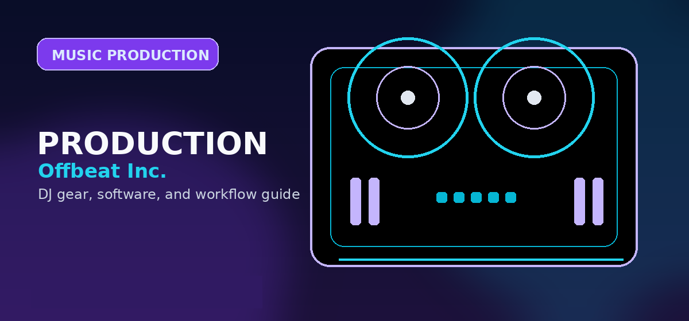

Ableton Live Review 2026: The Ultimate DAW for Live Performance and Production
Comprehensive guide to Ableton Live review 2026 DAW features price beginner vs pro with practical recommendations and current buying notes — updated 2026.

Disclosure: This page uses affiliate links. We may earn a commission at no extra cost to you. Full disclosure →
In 2026, the digital audio workstation (DAW) landscape is more competitive than ever, but Ableton Live continues to hold a unique position as the industry standard for hybrid creators. While FL Studio dominates the beatmaking scene and Logic Pro remains the powerhouse for Mac-based studio engineers, Ableton Live excels by bridging the gap between a traditional recording studio and a live stage. Its evolution has focused on refining the duality of its interface—optimizing both rapid-fire improvisation and meticulous arrangement. For producers who view the DAW as an instrument itself, Ableton provides an unmatched ecosystem of low-latency monitoring and flexible clip launching. Whether you are scoring a film, producing an EDM anthem, or performing a complex hybrid set at a festival, Ableton Live 2026 offers the stability and creative agility required for modern professional music production.
The Power of Dual Workflows: Session vs. Arrangement
The defining feature of Ableton Live remains its dual-view architecture. Session View acts as a non-linear sketchpad where producers can launch clips, experiment with song structures in real-time, and trigger ideas without being tied to a timeline. This makes it the premier choice for live performance and electronic music improvisation. However, 2026 updates have significantly streamlined the transition to Arrangement View. Enhanced automation lanes and a more intuitive timeline allow users to take the raw energy of a Session sketch and polish it into a radio-ready track with surgical precision. This fluidity prevents the "creative block" often found in linear DAWs, allowing the artist to move seamlessly from a spontaneous jam to a detailed composition.
Max for Live: An Infinite Ecosystem
What truly separates Ableton Live from its competitors is Max for Live (M4L). Rather than relying solely on built-in tools, Ableton integrates a visual programming environment that allows users to build their own instruments, effects, and sequencers. In 2026, the M4L community has expanded into a massive repository of third-party devices that can handle everything from generative AI melodies to complex modular synthesis. For the power user, this means the DAW is never "finished"; it evolves based on the community's innovation. From advanced LFOs to custom MIDI controllers, the extensibility of Max for Live ensures that Ableton can adapt to any avant-garde production technique, making it a future-proof investment for serious sound designers.
Pricing and Versions: Finding Your Tier
Ableton Live is offered in three primary tiers to accommodate different budget levels and professional needs. Ableton Live Intro (approx. $99) is the entry point, offering the core workflow and a limited set of sounds, ideal for those testing the waters. Ableton Live Standard (approx. $449) is the sweet spot for most producers, providing full functionality, a wide array of effects, and the ability to record audio and MIDI without restrictions. For those seeking the full experience, Ableton Live Suite (approx. $749) is the gold standard. Suite includes the complete library of sounds, all advanced instruments, and the crucial Max for Live integration. While the price point is higher, the inclusion of the full spectral toolkit and expansive sample library eliminates the need for most third-party plugins.
Beginner vs. Pro: The Learning Curve
For a beginner, Ableton Live can be intimidating due to its minimalist, "grey-box" aesthetic and non-linear logic. However, once the concept of "clips" is mastered, the learning curve flattens quickly. Beginners can start by dragging and dropping loops into Session View to understand rhythm and harmony. As a producer evolves into a professional, the workflow shifts toward complex routing, side-chaining, and the use of "Racks" to create massive, layered sounds. Pros leverage Ableton's low-latency monitoring and stable CPU management to run massive projects during live shows—a feat that often crashes other DAWs. The transition from beginner to pro in Ableton is a journey from using the software as a recorder to using it as a performance instrument.
2026 DAW Comparison Matrix
| Feature | Ableton Live 2026 | FL Studio 2026 | Logic Pro 2026 |
|---|---|---|---|
| Primary Strength | Live Performance / Hybrid | Beatmaking / Step Sequencing | Traditional Studio / Mixing |
| Workflow | Non-linear & Linear | Pattern-based | Linear / Timeline |
| Extensibility | Max for Live (High) | VST Support (High) | Apple Ecosystem (Medium) |
| Pricing Model | Tiered Purchase | Lifetime Free Updates | Flat One-time Fee |
| Best For | DJs, EDM, Sound Design | Hip-Hop, Trap, Bedroom Pop | Composers, Songwriters |
| Est. Pro Price | $749 (Suite) | $499 (All Plugins) | $199 |
Ableton Live 2026: Pros & Cons
✅ Pros
- Session View is unrivalled for live performance
- Max for Live gives infinite customisation possibilities
- Best DAW for DJs integrating Ableton Push controllers
- Powerful warping engine for mixing and remixing
- Solid MIDI workflow and AudioEffectRack system
❌ Cons
- Suite edition is expensive ($749)
- No lifetime updates — subscription model for upgrades
- Less intuitive for traditional linear recording
- Max for Live adds cost ($99/yr or Suite required)
Key Specs
Quick Verdict
Choose Ableton Live if: You plan to perform your music live, enjoy improvisational sketching, or want a deep, modular ecosystem via Max for Live.
Choose FL Studio if: You are primarily a beatmaker who prefers a step-sequencer workflow and wants a one-time payment for life.
Choose Logic Pro if: You are on a Mac, working on traditional song structures, and need a professional mixing environment at a budget price.
Final Thoughts
Ableton Live remains the most versatile tool for the modern producer who refuses to be boxed into a single role. Its ability to function as both a high-end studio and a rugged live instrument makes it an essential piece of gear for anyone serious about electronic music or contemporary production. While the price of the Suite version is a significant investment, the productivity gains and creative freedom provided by the Session View and Max for Live are unparalleled.
Ready to start producing? Check out our recommended affiliate links below to grab the best deals on Ableton Live licenses and compatible MIDI controllers.
Shop on Amazon
Pair Ableton Live with hardware — check Amazon for Push controllers and interfaces.
Also on Plugin Boutique
Buy Ableton Live direct — includes full activation, regular sales.
Frequently Asked Questions
Is Ableton Live good for DJs?
Yes. Ableton Live is excellent for DJs who also produce — its Session View lets you trigger clips live, and it integrates with most MIDI controllers. Many electronic DJs use it alongside Traktor or Serato.
How much does Ableton Live cost?
Ableton Live 12 has three tiers: Intro (~$99), Standard (~$449), and Suite (~$749). Student discounts are available. There's also a free 90-day trial.
Ableton Live vs Logic Pro — which is better for DJs?
Ableton Live is better for live performance, looping, and electronic music. Logic Pro is better for traditional composition and mixing. DJs typically prefer Ableton for its Session View and real-time triggering.
Does Ableton work on Windows?
Yes, Ableton Live is fully supported on both Windows 10/11 and macOS. Both versions are included in a single license purchase.
Can you use Ableton Live without a MIDI controller?
Yes, you can use it with just a mouse and keyboard. However, a MIDI controller significantly improves workflow for live performance and production.